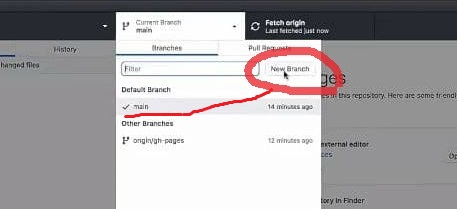
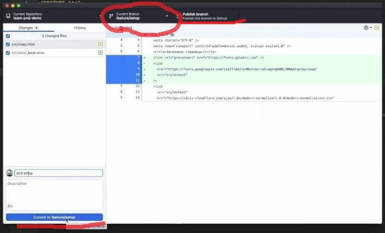
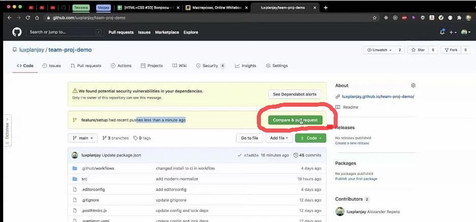
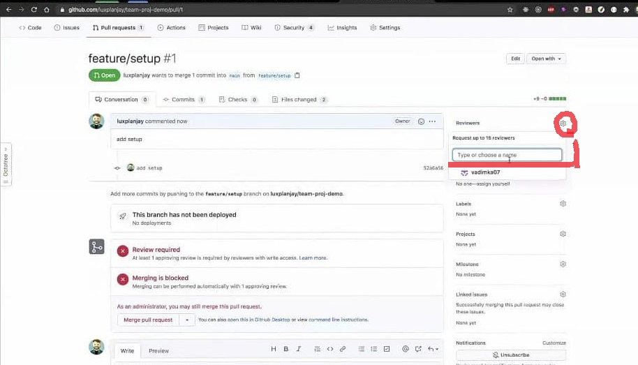
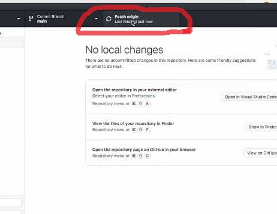

Начало работы:
- В GitDesktop жмём «Fetch origin» (так мы проверяем, есть ли на Гитхабе сделанные другими разработчиками обновления).
- Затем там же жмём «Pull» (если такие обновления есть).
- Создаём новую ветку из main. Называем по шаблону, в зависимости фича это или
багфикс.

- feature — когда делаем какую-то штуку (хедер, секцию, кнопку, палитры...).
- bugfix — когда устраняем ошибки, кривизну и косяки.
- называем так:
- feature/название-фичи
- bugfix/название-багфикса
- Открываем ветку в Visual Studio Code (кнопку «Publish branch» пока игнорируем).
- Приступаем к работе))
Работа:
- Классы называем по BEM, отталкиваясь от названий секций.
- Например, класс всей секции — «team».
- Класс для списков «team__list».
- Для элементов списка «team__items».
- Для ссылок «team__links».
- Для, например, особой ссылки «team__links--special».
- Смело добавляем комментарии, они лишними не будут. Помните — тимлид такой же ученик))), чем больше комментариев, тем
меньше он будет тупить)).
Завершение работы:
- В GitDesktop коммитим ветку не в main, а в свою ветку. Делаем «Publish Branch».

- В GitHub жмём «Compare & Pull Request» (если этой кнопки нет, заходим во «Все ветки», и напротив своей ветки жмём
«New pull request».

- В поле «add setup» — название ветки. Ниже комментарий (можно развёрнутый).
- Назначаем минимум одного ревьюера (на каждый пул реквест не забываем ставить заново). По условиям д/з это должен быть
тимлид, хотя это ограничение условное.

- Все могут смотреть и предлагать правки. Тимлид делает «Merge pull request» (ветка при этом удаляется, обновляется
main).
- Если нужны правки, то после их внесения — делаем снова коммит и
Pull в свою ветку.
- После ревью, ветка на GitHub удаляется автоматически и все изменения вносятся в main (на GitDesktop ветка не
удаляется автоматически).
- Далее, как в самом начале, в GitDesktop выбираем ветку main, жмём «Fetch origin» и
делаем «Pull», чтобы внесённые изменения в main на GitHub сохранились на вашем компьютере. После — удаляем вашу
локальную ветку (всё, что вы делали, уже сохранилось в главную ветку).

- P.S. Самое-самое ключевое и важное, что нужно всегда контролировать — следить какая именно
ветка в данный момент выбрана на вашем GitDesktop. Чтобы ваша работа шла
только в вашей ветке, а не в main. Тогда всё будет хорошо)).